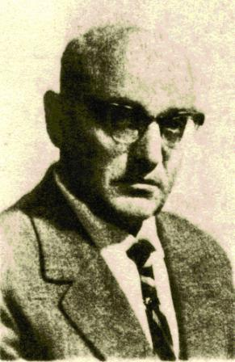
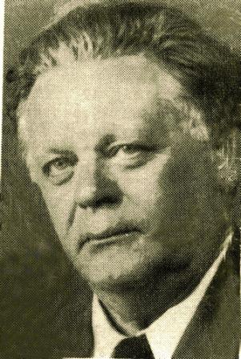

Baruch Olizki
Poet
 Born in Turisk in 1907, Olizki's parents and family were religious yet liberal people.
Baruch Olizki attended the cheider. Both his father and mother passed away when he was a very young child. Baruch was adopted by his uncle Simcha Olizki who brought him to Ratny where he lived. In Ratny he attended the Zionist school and studied in the Hebrew language. When he returned to Turisk as a young man, he suffered from hunger because of the difficult economic situation. In order to survive he became a teacher of young children in a small village.
After a short time he married Sarka, a daughter of a rich family and soon a son Monik was born. With support of Sarka's family they opened a grocery store.
Because of economical problems they had to close the store and Olizik became a teacher in the "Zysha" Yiddish school were he won the admiration of his pupils. He loved children and they loved him. He had a modern pedagogic approach for the times and was especially devoted to children from poor families whose life experience he could relate to.
He later divorced his wife and was forced to separate from his wife and son. His first poem, "My blood is Mixed" was published in a journal titled, "Pages of Literature" in 1925. In the early 1930's Olizky arrived in Warsaw where he remained jobless, suffered hunger, but became a productive poet
His poems and tales were published in almost all the Yiddish
Periodicals in Poland. He remarried a former pupil. They lived in Lodz were he became teacher of Yiddish in a "Zisha" school. His wife was a librarian. During this period he was very prolific and his works were published all over the Yiddish speaking world. His work from the years 1936-39 have been collected.
Born in Turisk in 1907, Olizki's parents and family were religious yet liberal people.
Baruch Olizki attended the cheider. Both his father and mother passed away when he was a very young child. Baruch was adopted by his uncle Simcha Olizki who brought him to Ratny where he lived. In Ratny he attended the Zionist school and studied in the Hebrew language. When he returned to Turisk as a young man, he suffered from hunger because of the difficult economic situation. In order to survive he became a teacher of young children in a small village.
After a short time he married Sarka, a daughter of a rich family and soon a son Monik was born. With support of Sarka's family they opened a grocery store.
Because of economical problems they had to close the store and Olizik became a teacher in the "Zysha" Yiddish school were he won the admiration of his pupils. He loved children and they loved him. He had a modern pedagogic approach for the times and was especially devoted to children from poor families whose life experience he could relate to.
He later divorced his wife and was forced to separate from his wife and son. His first poem, "My blood is Mixed" was published in a journal titled, "Pages of Literature" in 1925. In the early 1930's Olizky arrived in Warsaw where he remained jobless, suffered hunger, but became a productive poet
His poems and tales were published in almost all the Yiddish
Periodicals in Poland. He remarried a former pupil. They lived in Lodz were he became teacher of Yiddish in a "Zisha" school. His wife was a librarian. During this period he was very prolific and his works were published all over the Yiddish speaking world. His work from the years 1936-39 have been collected.

When the Germans invaded Poland, in September 1939, Olizik and his family fled to Turisk. He became a lecturer at a Soviet high school in Grodno. The sudden German invasion of Russia in1942 caught them by surprise and they tried with no success to flee. Sadly, they perished along with the rest of the Jewish population. After the Second World War ended the brothers-writers Leib and Matys managed to collect a part of his works, in a book they titled: "My Blood Is Mixed".
Matys Olizki
Poet
 The poet Matys Olizki waas born in Turisk in 1915in a traditional, but liberal family. He was the younger brother of the writer Leib Olizki and Baruch Olizki. By the end of the second World War, he attendet the "modern cheider"
Where there studied also mathematics and languages. He
Was very talented. As a young pupil he secretly read general literature. When the first Jewish school was erectet, and Hebrew and Yiddish became studying languages he was among the first to study there. In 1926
When the Zionists decided to be a part of the "Tarbut" network, the "Bundists" founded a separate school. With
Yiddish as the teaching language and Joined the "Zisho"
Network. Leib Olizki became the headmaster, so Matis joined the new school for good. After graduating he studied and finished the teachers seminar of the "Zisho" network. Soon he began to write and Poetry for children
And publish in childrens newspapers , study books for children and collections. In September 1939 when the Soviet army took Turisk, they ordered to shut down the Hebrew school and all the Zionst institutions. Matys became a teacher in the Yiddish teaching school.
The poet Matys Olizki waas born in Turisk in 1915in a traditional, but liberal family. He was the younger brother of the writer Leib Olizki and Baruch Olizki. By the end of the second World War, he attendet the "modern cheider"
Where there studied also mathematics and languages. He
Was very talented. As a young pupil he secretly read general literature. When the first Jewish school was erectet, and Hebrew and Yiddish became studying languages he was among the first to study there. In 1926
When the Zionists decided to be a part of the "Tarbut" network, the "Bundists" founded a separate school. With
Yiddish as the teaching language and Joined the "Zisho"
Network. Leib Olizki became the headmaster, so Matis joined the new school for good. After graduating he studied and finished the teachers seminar of the "Zisho" network. Soon he began to write and Poetry for children
And publish in childrens newspapers , study books for children and collections. In September 1939 when the Soviet army took Turisk, they ordered to shut down the Hebrew school and all the Zionst institutions. Matys became a teacher in the Yiddish teaching school.
When in June 1942 the Germans invaded Russia he joined a group of Jews to leave Turisk with the retreating Soviet army. When, after a long and risky journey they came to Kirgizistan. During the years of the war he was forced to work hard labor, he fall sick for monthes, and Sonia was keeping wath at his bed. They got married, and when the war finished the went back to Poland. With his brother Leib and other intellectuals they tried to resurrect the Jewish culture in Poland, Matys Olizki managed to publish two collections (books) of poetry.After a short while they left for occupaied Germany,living in a camp of displaced refugees. There he continued to write and publish his works. In the early fifthies they immigrated (Matys,Sonia and son) To the U.S.A. and settled in N.Y. He continued his work and published his poetry, stories in the Yiddish newspapers and Journals. For his living he is continuing partly to teach. Three of his collections were published in Israel. According to his friends he lives now in a nursing house in N.Y.
Leib Olizky
Yiddish Writer and Poet
 L. A. Olizky a writer, poet, tales, fables in Yiddish, and translator to Yiddish of works from Russian and Polish literature.
He was born in the year 1894 in Turisk, Region of Wollyn Poland today Ukraine,his parents were Ortodox Jews.The three brothers were brought up religious,but open minded. L.Olizky attendet the "Cheider", finished a Yeshive, where he studied also, general studies and languages, s.a.Polish, Polish literature and Russian.
In Turisk he became the mainstay of "Zisha" Yiddish school.
It was the first school in the region to teach in Yiddish. Later only one more Yiddish teaching school,was foundet in the region there he brought up and educated generations of students in the Yiddish culture. He was among the initiators of the "Culture Association", the Yiddish library,and the Amateur troup Yiddish shows.
Yiddish culture flourished, thanks to L.Olizky and his brothers.
Turisk became famous all over Poland as a castle of Yiddish culture.
Leib Olizky started to create in Yiddish as a youngster,in the beginning of the 20 th century. He wrote his first novels and tales under the impression of the events, and suffer the community went trough in the dark years of the first world war.
In the thirties he went to Warshaw the capitol of Poland, the center of Yiddish culture. Soon He integrated and was among the most popular and valued Yiddish writers of that time.
Thanks to his talent many young writers joined in the Yiddish activities.
L. A. Olizky a writer, poet, tales, fables in Yiddish, and translator to Yiddish of works from Russian and Polish literature.
He was born in the year 1894 in Turisk, Region of Wollyn Poland today Ukraine,his parents were Ortodox Jews.The three brothers were brought up religious,but open minded. L.Olizky attendet the "Cheider", finished a Yeshive, where he studied also, general studies and languages, s.a.Polish, Polish literature and Russian.
In Turisk he became the mainstay of "Zisha" Yiddish school.
It was the first school in the region to teach in Yiddish. Later only one more Yiddish teaching school,was foundet in the region there he brought up and educated generations of students in the Yiddish culture. He was among the initiators of the "Culture Association", the Yiddish library,and the Amateur troup Yiddish shows.
Yiddish culture flourished, thanks to L.Olizky and his brothers.
Turisk became famous all over Poland as a castle of Yiddish culture.
Leib Olizky started to create in Yiddish as a youngster,in the beginning of the 20 th century. He wrote his first novels and tales under the impression of the events, and suffer the community went trough in the dark years of the first world war.
In the thirties he went to Warshaw the capitol of Poland, the center of Yiddish culture. Soon He integrated and was among the most popular and valued Yiddish writers of that time.
Thanks to his talent many young writers joined in the Yiddish activities.
In the years of His being a teacher He continued to create: Stories for children, He published a book of fabls for children. in those years he ttanslated Adam Mizkiewich and Ulian Toubin From Polish and Poushkin and the Fabls of Kirilof,from Russian when Germany invaded Russia,He fled with his family to east Russia, the Bashkiry Republic, working hard labor from1942 till 1945. L. Olizky joined a staff of military hospital, till the end of the war. He returned to Poland, trying to continue his work. With hopes to be a part of Jewish intellectuals who tried to start a new Jewish community life in Poland. Very soon He understood that it is an impossible task. In 1959 He left with his family to Israel, living and creating in Givatayim near Tel-Aviv. L. Olizky wrote and published over forty works, tales, Novels, Poems etc. Only three of his works, were translated to Hebrew. Baruch Olizky ,the brother of Leib,a writer and poet was killed by Germans in the Holoccaust. Matys Olizky the youngest brother of Leib, a poet, survived the holocaust in Russia. He wrote and published a number of Poems, songs for children. Lives and still creating in the U.S.A.
Liber Brenner
One of the "Bund" Leaders in Poland
 Liber Brenner was born in Turisk in 1901. His father was a "Gabay" in the court of Rabbi Mordah's son. His mother owned a small flour shop and the family was very poor. Liber attended a "cheider", however, when the First World War surprised them the family left Turisk to settle in the town of "Zwoohil" in Russia where he attended a Russian High school. When the war was over the family returned to Turisk. The economic situation was very bad and Liber helped his family by giving private lessons to school children and also taught in the Hebrew school.
He was among the founders of the "Zisha" school with Yiddish as the main language. He was the most devoted teacher and beloved educator. He became very active in the "Bund" Socialist Party.
The Polish authorities could not understand the differences between them and the illegal Communist party and the invested time and effort in attempts to stop his activities. In 1929 he moved with his family to a bigger town by the name of Chenstochov in western Poland where he was appointed as a lecturer of literature in the Perez school and also a lecturer in the cultural circle of the Cultural League.
From the year 1934 until the beginning of the Second World War he served as president of the TOZ, a project to organize summer camps for children of the working class.
In 1936 the Polish authorities prohibited Brenner from teaching because of his political activities. When Germany conquered Poland he joined the Jewish underground in the resistance against the Nazis. He was one of the leading fighters of the Chenstohova Ghetto. He and his wife survived. Their little daughter was hiding outside the Ghetto and also survived and joined them after the war.
Liber Brenner believed in the possibility of establishing a Jewish life in Poland and after the Holocaust with a group of intellectuals they remained in Poland and found the Jewish Committee of the city of Chenstohov.
Yiddish new papers and periodicals were renewed with support of the Polish authorities. Liber Brenner published many articles in these re-established newspapers. In 1951 he published his study in Yiddish-"Resistance Rebellion and Annihilation of Chenstohova Ghetto" in Warsaw. When Gomulka ordered the mass departure of the remaining Jews from Poland he immigrated to Israel with his family and made his life here.
Dr. Moshe Markuzi
Researcher
Dr. Moshe Marcusi was born in Germany in 1745. He studied medicine at the Heidelberg University. When he graduated and being influenced by the "Askala" movement ideology, he decided that after a short period of experimental work in Germany he will go to Poland, to live in the periphery,among the poor Jewish people So in 1774 he left for Poland, lived and practisised in the little town Kapoust. He was appointed physician to the Shtetl Turisk by the "Crown" the treasury of Poland. He soon was the subject of admiration by the poor Jewish Population in Turisk. To them he dedicated most of his time, some times, with no payment. There he become avare of the very hard health state of the poor Jewish population. He initiated a research, investigated several of the diseases widespread among them. He became famous and admired in all the region as the "Angel." His research and experience he registered in Yiddish in his diary. After several years of work, the Polish magnat and friend Michael Bobrovsky, convinced him, and supported economicly to publish his findings in a book. The book was published in the Yiddish language, the title: "Oser Israel" to Jews in Poland. In the preface he explains: This book I am dedicating to "Keal Israel" the Jewish masses, so that they teach and learn and help themselves since they live in remote pheripherial places, where doctors cannot be found, in order, with help of this book, to prevent people from getting ill of common deseases. Recommendations to use the book werepublished by rebe Mordhay of Turisk and rabi Mordhay Cahane of Kovel.
in order to convince orthodox Jews to use it. In his book Dr. Moshe Markusi guides the user in the most basic elementary domestic hygienic medicine. Dr. Markusy with his daring approach against folly believes spread among the Jews in the peripherial provinces in east Europe. Dr. Moshe Markusi lived in Turisk among the Jewish people, for many years. He was involved in their every day life,around all those years. He tried to help them solve prolems and overcome troubles.He was a pioneer to use the spokenYiddish language to write a medicine book.This isconsidered theconnecting thread between the Yiddish language of the 18th century and the modern Yiddish language of the 20th century. "Oser Israel" was the first medicine book published in Yiddish and remains the only one until today!
Arie Tabacay (Tabachendler)
Writer
 Arie (Leibel) Tabacay (Tabachendler) was born in Turisk in 1906.
He attended the traditional "Cheider," Then studied in a modern
"Yeshiva." Back in Turisk he joined the Zionist Socialist "Halutz"
Pioneer Organization.
He started his literary career while living in Turisk. He was active with the Zionist youth as he awaited documents of then Palestinian authorities. In 1935 he immigrated to Palestine and joined Kibbutz "Givat Hashlosha".
He was a firm believer in the "Ber Borochov Doctrine to convert the structure of the Jewish peoples pyramid which was based on business class to a structure based on the working class and agriculture. As a pioneer he strived to be a model by changing his way of life and convince others to become farmers or workers in industry, etc.
Arie (Leibel) Tabacay (Tabachendler) was born in Turisk in 1906.
He attended the traditional "Cheider," Then studied in a modern
"Yeshiva." Back in Turisk he joined the Zionist Socialist "Halutz"
Pioneer Organization.
He started his literary career while living in Turisk. He was active with the Zionist youth as he awaited documents of then Palestinian authorities. In 1935 he immigrated to Palestine and joined Kibbutz "Givat Hashlosha".
He was a firm believer in the "Ber Borochov Doctrine to convert the structure of the Jewish peoples pyramid which was based on business class to a structure based on the working class and agriculture. As a pioneer he strived to be a model by changing his way of life and convince others to become farmers or workers in industry, etc.
The kibbutz decided that Tabacay become a longshoreman
at the new Tel Aviv harbor where he worked very hard. He continued his literary work in these conditions.
His first book of novels, Home and Sea, was published in 1941.
He was among the first to join the Hebrew Brigade". He served until the end of the Second World War in spite his age. He believed in self-fulfillment of the Idea.
The second book of novels was, A Full Life, was published in 1953.
Arie Tabacay continued to tell his stories. There was, The Hard Working Man and Farmer and The Longshoremen from Saloniki Always in the Center.
All of his characters were drawn from all the different layers of Israeli society. Arie Tabacay was a son of our Turisk Shtetl and knew from the inside about the intricacies and diversity of Turisk. He depicted them with great love for the Jews and their vibrant way of life.
Yohanan Tversky
Writer
 The Hebrew writer Yohanan Tversky was born in Turisk in 1901. His Grand father was the Rabbi Yaacov Leib (the Tversky family). His father Nahum Tversky was a Chassidic Rabbi in Warsaw and was killed by the Nazis during the Holocaust.
Yohanan spent his childhood years in Turisk. When he finished the Yeshiva he vent to Warsaw.
He studied at home with private teachers, according to the tradition of the Chassidic. He studied the holy books, languages, and other general studies.
The Hebrew writer Yohanan Tversky was born in Turisk in 1901. His Grand father was the Rabbi Yaacov Leib (the Tversky family). His father Nahum Tversky was a Chassidic Rabbi in Warsaw and was killed by the Nazis during the Holocaust.
Yohanan spent his childhood years in Turisk. When he finished the Yeshiva he vent to Warsaw.
He studied at home with private teachers, according to the tradition of the Chassidic. He studied the holy books, languages, and other general studies.
While studying languages he was drawn to Hebrew and decided to speak to everyone only Hebrew! He was 17 years old during the First World War when he met Czechoslovakian officer, who was a prisoner of war and who taught him Ancient Greek and old Roman languages. In 1915 he entered the Hebrew high school in Odessa. When anti-Jewish riots started in the beginning of the First World War, the family left for shelter in Bessarabia. There he became a Hebrew teacher for the refugee children. He wrote stories in Yiddish and Hebrew and translated to Hebrew. In 192- he went to Berlin and studied religious philosophy as an academic student and aesthetics.
Continuing his met the poet Bialik in Berlin who supported him spiritually and financially. After finishing his studies he immigrated with mother and sister to the United States. He had a very hard time financially and adjusting to live in the USA. He was appointed lecturer in a seminar for women teachers in the "Tarbut" school in New-York. He studied at Harvard University and was appointed Professor of Israeli History. During that time he wrote mainly historical novels and biographies. For his book, "Alfred Dreyfuss" he was awarded the "LAMED" award. His best known works are, "The Virgin from Ludmir", "Uriel Dacosta", "Where is Ararat Land?", What I Choose". In 1945 he went to live in Israel. He was appointed editor of the publishing company "Dvir", There he continued his work until he died.
Zoosie Weinper
Poet and Writer
 Zoosie Weinper was born in Turisk, in 1892. His father was the head Cantor in the court of Rabbi Leibenu. As a child he attended cheider in the Rabbi's court. As a teenager he studied in the Rovno and Brest Litovsk Yeshiva. At 16, while living far from his home he began secretly studying Russian language and literature and general studies. During this period he started to write short stories. Because of his urge and aspiration to advance and develop as a writer he decided to move to the cultural heart of Yiddish literature Warsaw. To earn a living he worked for several years and became a public school teacher. In 1913 his first poem written in Yiddish and published was, Dos Yiddishe Folk". After this his poems and stories were published in journals and periodicals.
In 1918 Z. Weinper editor of the monthly magazine, "The Beginning"(der onhoib"Yiddish) the center for the young generation of Yiddish writers and poets. The monthly was closed when Z. Weinper joined the Jewish battalion in the British army and left for Palestine. He served the army for 18 months then returned to the United States. For more than five months he published a literary periodical "By the Bonfire".
In the year 1920 a collection of his songs and poems were Published by the Bezalel publishing company in NewYork. The name of the collection, From Our Land" was dedicated to the memory of the Jewish soldiers who served in the battalion in Eretz Yisrael between March1918 and October 1919. The book was also dedicated to his beloved mother who perished in the Holocaust. In the year 1929 Z. Weinpert went for a literary tour of Europe. Thousands of fans attended the evening events where he read his works and gave lectures.
He spent more than a month with his mother and family in Turisk his home town that he loved. Turisk is at the heart of many of his works. While staying there he was approached by both the Zionists and Yiddish lowing Bundists. He was considered by both sides as a friend and companion. Z. Weinper was a very impressive poet and lecturer. While Yiddish was his mother language and the language of his creations he was an active and devoted Zionist. He was the one to bridge between the two "fighting" sides. During forty years of creativity he commemorated th ecultural pattern and life in our shtetl Turisk, the special Yiddish, and dreams destroyed forever in the flames of the Holocaust .
Yacov Yosef Wall
Writer, Publicist, and Critic
 Y.Y. Wall was born in Turisk in 1870 in an Orthodox Chassidic community. His father was a "Cabalist" and Wall was educated in the Cabalist tradition.
As a young yeshiva student he secretly began studying languages such as Russian, French and literature. He traveled and lived in several Jewish Shtetls in southern Russia. He finished college in Baku and in 1893 married and moved to Novgorod.
There a group of active intellectuals was gathering and the famous poet and philosopher Feinberg joined them and Wall soon became one of Feinberg's closest collaborators and friend. He wrote several philosophical essays in Hebrew and Yiddish periodicals that caused debates in intellectual circles. Wall came back to Turisk as a teacher working in the Hebrew school. After one school term he went to Kiev and Baku. In Baku he founded a Hebrew school and taught the 12th grade. In 1920 he emigrated to the U.S.A. He was a scholar in Boston and New York where he taught at a Seminar for women teachers. There
he was active unitl 1944 when he passed away. His first works were published in the Journals:
"Hameliz and Azfira as well as some critical essays on literature.
Y.Y. Wall was born in Turisk in 1870 in an Orthodox Chassidic community. His father was a "Cabalist" and Wall was educated in the Cabalist tradition.
As a young yeshiva student he secretly began studying languages such as Russian, French and literature. He traveled and lived in several Jewish Shtetls in southern Russia. He finished college in Baku and in 1893 married and moved to Novgorod.
There a group of active intellectuals was gathering and the famous poet and philosopher Feinberg joined them and Wall soon became one of Feinberg's closest collaborators and friend. He wrote several philosophical essays in Hebrew and Yiddish periodicals that caused debates in intellectual circles. Wall came back to Turisk as a teacher working in the Hebrew school. After one school term he went to Kiev and Baku. In Baku he founded a Hebrew school and taught the 12th grade. In 1920 he emigrated to the U.S.A. He was a scholar in Boston and New York where he taught at a Seminar for women teachers. There
he was active unitl 1944 when he passed away. His first works were published in the Journals:
"Hameliz and Azfira as well as some critical essays on literature.
Avraham Oyvental
Author
The author Avraham Oyvental was born in Turisk in 1903. He was the brother of the poet, Zisie Weinper. The family was Orthodox and his father was the head cantor in the synagogue of Rabbi Leibele of Turisk. As a young pupil he attended the "cheider" and continued in a Yeshiva. As a young Yeshiva student he began secretly studying general studies and foreign languages. As a very young student he began writing stories and tales. The stories he wrote were mainly for children and were very popular among the young pupils. In 1926, with the help of his brother, the poet Zoosie Weinper, he immigrated to the United States. He worked and studied and the successfully graduated from the Seminar for Yiddish teachers and became a teacher. He became a very prolific writer and was published in monthly journals of literature such as, Zukunft, Studio, tag, and "Kinder Journals." A. Oyvental started to collect his works, but sadly he did not survive to see his works published. He died in 1939, at the very young age of 33.